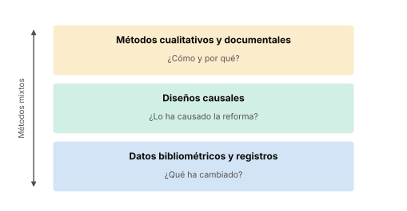

Investigación sobre la investigación
https://pablosancheznunez.com/ciencia-de-la-ciencia/12-disenos.html

| Diseño | Idea | Ejemplo en metaciencia |
|---|---|---|
| Experimento aleatorizado | El investigador asigna al azar la intervención | Asignar al azar manuscritos a revisión simple o doble ciega |
| Experimento de campo | Aleatorización en un entorno real | Enviar correos idénticos con nombres distintos a investigadores para medir sesgos en la respuesta |
| Experimento natural | Un cambio externo asigna «casi al azar» | Una lotería entre candidatos de igual puntuación en una convocatoria |
| Diferencias en diferencias | Comparar el cambio antes y después en un grupo afectado frente a uno no afectado | Efecto de un mandato de acceso abierto de un financiador frente a otro que no lo aplica |
| Regresión discontinua | Comparar justo por encima y por debajo de un umbral | Proyectos que quedan justo por encima o por debajo de la nota de corte de financiación |
| Control sintético | Construir un «gemelo» ponderado de la unidad tratada | Un país que cambia su sistema de evaluación |
Silberzahn, R.; Uhlmann, E. L.; Martin, D. P.; Anselmi, P.; Aust, F. et al. (2018). Many analysts, one data set: Making transparent how variations in analytic choices affect results. Advances in Methods and Practices in Psychological Science, 1(3), 337-356.
Investigación sobre la investigación